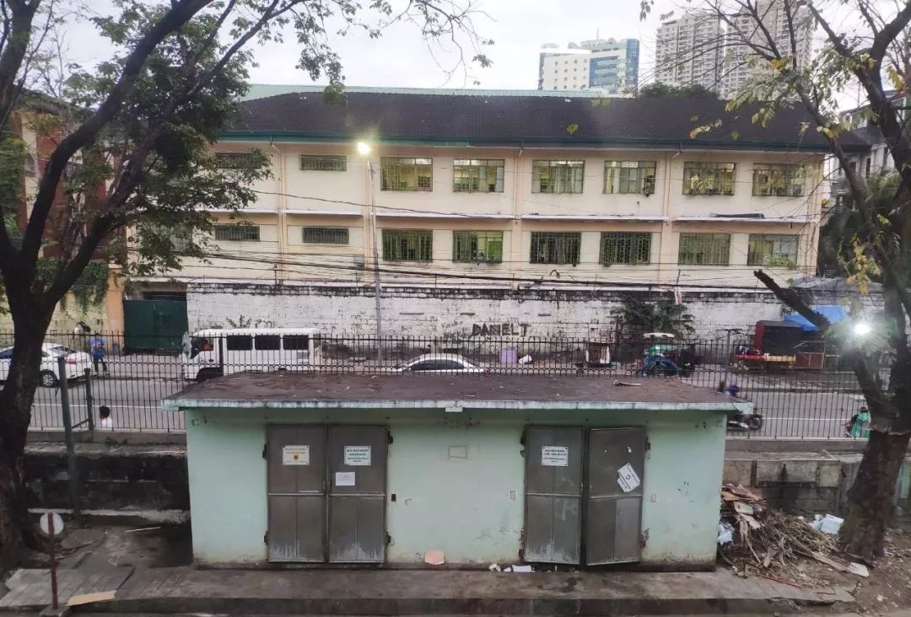
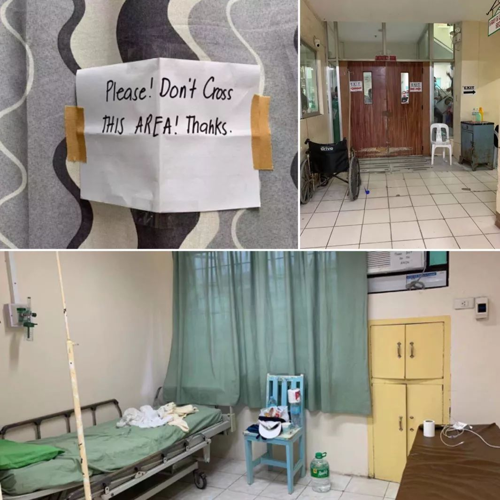
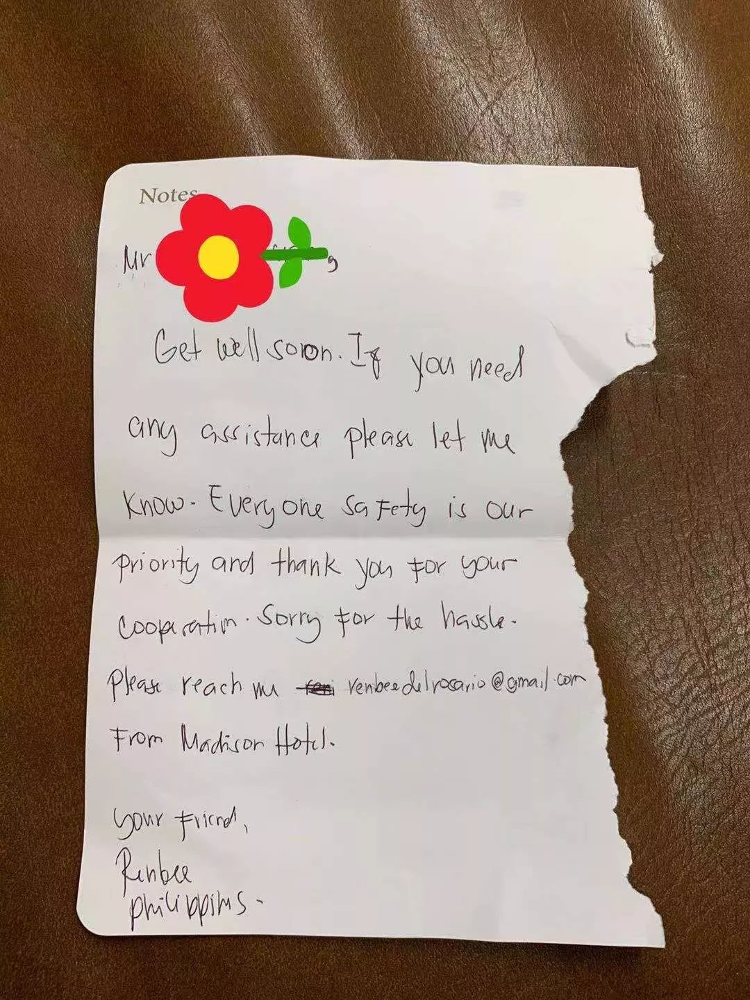
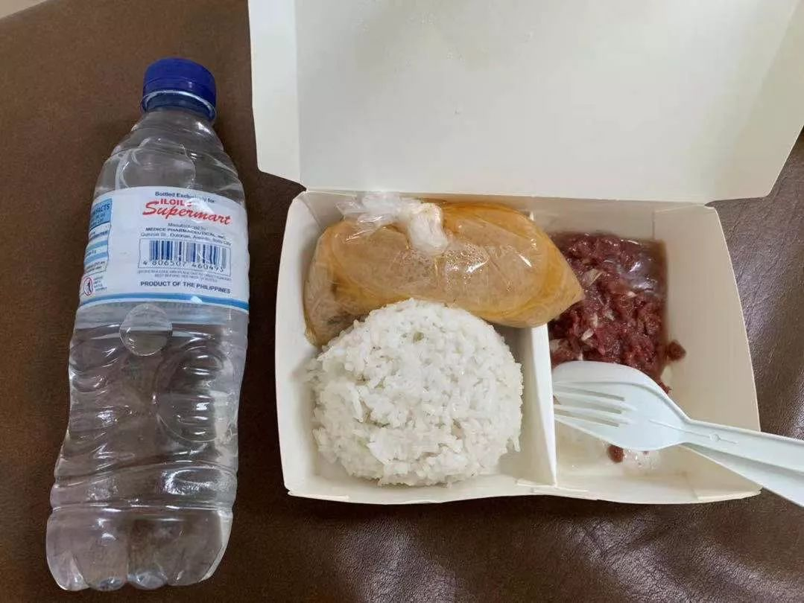

封城满14天了，我们的生活还在继续 | 三明治武汉每日书11
原文链接 备份链接 对于封城后的武汉及周边地区的人们来说，社区的存在感从未如此强烈，“隔离”成了生活中绕不开的关键词。今天的“武汉日常”每日书中，三位作者向大家展现了生活在疫区的真实感受。确诊和疑似数据增长的背后，是紧缺的医疗资源，是充 …
记者/颜星悦
编辑/石爱华 宋建华

**菲律宾首都马尼拉的San Lazaro医院，一位感染新冠病毒的武汉游客在此离世
**
2月2日，菲律宾当局宣布该国首宗因新冠病毒感染引发肺炎的死亡病例，这也是中国境外第一例死亡病例。据世卫组织的菲律宾代表透露，死者44岁，来自中国武汉。
据悉，该名患者确诊前出现发烧、咳嗽及喉咙痛等症状，在马尼拉圣拉萨罗医院（San Lazaro）确诊后隔离治疗。菲律宾卫生部长杜克说，患者接受治疗期间，情况稳定且有好转迹象，但在其生前最后的24小时，病情急剧恶化，最终死亡。
菲律宾卫生部2月5日通报，除了这位死者，菲律宾监测到的疑似新冠病毒感染者总数达133人，其中115人已被隔离观察，包括54名中国公民。
董宁是被隔离在菲律宾医院的中国游客之一，今年30岁。1月21日他从南京经厦门到达马尼拉，没有武汉接触史。1月31日，他吹了一夜空调后出现咳嗽、流鼻涕等症状，之后他被送往医院要求隔离，“我觉得自己只是感冒”，董宁说。
由于菲律宾没有核酸检测试剂盒，确诊筛查过程周期长，虽然董宁的CT检查、血检、尿检均无异常，但他还要等待口腔和鼻腔黏膜的检测结果才能解除隔离，他了解到，至少有20余名华人正在菲律宾接受隔离，其中已有确诊病例。
截至发稿，董宁仍在等待检查结果，他以口述的方式记录了他在菲律宾医院隔离期间的经历。

救护车赶到酒店，将董先生送到医院隔离

因咳嗽被隔离看护
1月31日
我们一行六人，1月21日从南京经厦门转机到菲律宾首都马尼拉。当时江苏和福建未有确诊病例，我也没有出过南京。我们在马尼拉机场测量了体温，顺利过关，当时马路上已经有很多人戴口罩了。
马尼拉并不是我们的目的地，我们在酒店睡了一晚，第二天就飞到菲律宾西南部的度假胜地巴拉望岛，在这里我们六人分散，各自住不同的酒店。
1月30日，我出现了咳嗽的症状。当日白天，我穿着防晒服在海里游泳，上岸后没有及时换，这可能是我感冒的原因。酒店里的空调开得很低，被子只有一层床单，夜里我被冻醒，今天（31日）扁桃体就开始发炎，流鼻涕，嗓子里有痰。
在我看来，这点小感冒不算什么，但非常时期，还是注意一点好。于是我一边咳嗽，一边下楼找口罩。下楼时，酒店大堂的工作人员没有戴口罩，等我转了一圈回来，发现大厅十多个人突然全都带上口罩了，他们看着我，离我远远的。
我觉得有点奇怪，回客房后，电话立刻响了，是前台打来的。他们问我从哪里来，这时我才意识到，他们怀疑我感染了新型冠状病毒。我赶忙解释自己不是来自湖北，对方询问我是否咳嗽、发烧，我如实讲了情况，前台很直接地跟我说：“你需要去医院看一下。”
我再次下楼，酒店经理递给我一瓶矿泉水和几副口罩，我测了三次体温，都是36.4度。我按照工作人员要求，在一张纸上写下我抵达菲律宾后的全部行程，包括航班、餐厅信息。我认为自己只要配合他们，去医院检查，拍个CT，没有病就没问题了。
正要出发去医院，经理留住我，让我先回自己的房间等待，他们说会安排医生过来先看一下。 我还是那个想法：等医生过来检测，确认我不发烧，我就可以继续自己的行程了。
我在房间等待一个多小时后，前台突然通知我带着行李下楼。
这次下楼，大厅里多了很多人，他们都“全副武装”，护士穿着防护服，门外有一辆警车一辆救护车，都是来接我的。
我上车时，酒店经理跑来给了我一把钱，当时也没数。我心里琢磨，这是给我应急的钱吗？这个经理对我还是很好的，在房间等候的时候，他来给我送了餐和饮料。很多人都不敢靠近我。
到了医院，我直接被安排入住病房。我很懵，问医生接下来的安排，医生告诉我要在菲律宾待14天。我有点崩溃，14天，我签证都过期了，岂不是要“黑”在菲律宾了？
后来我才知道，这间病房是专门用来隔离的，有空调，但不允许开，而且必须开窗通风。窗户没有纱窗，但是加了栏杆。窗户对面是一些病房，偶尔看到一些病人起身。门口有一块门帘，上面英文写着：“ 拜托！请不要离开这个区域！谢谢。”
隔离病房里有两张很窄的床，一张病床，一张检查用床，不管哪张，都不舒服。房间没有无线网，4G流量不便宜，想看视频打发时间有点奢侈。洗手间配有一个马桶、一个淋浴喷头、一个洗手池，洗手池的水龙头和抽水马桶都没水，需要从一个黑桶里舀水冲厕所。沐浴没有热水，只能用冷水洗，我害怕冷水洗澡会加重感冒，忍着不洗。
这天晚上护士给我送来了一盒泡面（可是没有热水），一只N95口罩，也是我唯一领到的N95口罩，一直用着。

董宁隔离病房实景，门帘上写着：“拜托！不要离开这片区域！谢谢！”
检查无恙不能出院
2月1日
我一夜没睡，昏昏沉沉地被热醒，枕头上一大片汗渍。
早上6点，护士打电话来给我送药，说是治疗咳嗽的，我拿到一看，是泡腾片。一个白色的泡腾片冲在水里，没有完全化开，喝一口，酸得呛人。我向护士要一些阿莫西林（消炎药），没有给。
两个护士找了辆医用车，开车带我去隔离楼外不远的地方拍了CT，CT室是透明的，隔壁输液室里好多当地人趴在玻璃窗上看我。
因为医生还没来上班，肺部的CT结果还要等一会。我问护士，如果情况良好是否能离开，她低声说抱歉。我跟她解释，在国内，如果没有亲密接触过感染者，没有发烧等症状，是可以基本排除的，我很希望他们能多问问医生，多了解中国（的情况），让我走，我可以自我隔离。
菲律宾的医护人员非常有礼貌，今天抽血、取鼻腔和口腔粘液，因为把我弄疼了，他们一直跟我道歉。中午，护士给我送了午餐，是牛肉和一袋粉丝一样的汤。我中午测了体温、血压，一切正常。
酒店的经理大老远来到医院，送了水和一大包的零食水果给我，还给我写了一封信，好感动。我回信谢过他，并告诉他不要担心，我觉得自己只是感冒而已。
因为昨晚没睡好，我下午睡了一觉。醒来时，医生来了，他告诉我CT和血检、尿检结果都OK，如果政府同意的话可以让我早点回去，明天就可以让走。想到明天可以回家，我很激动，他们还祝福中国可以早点战胜疫情。
但是医生很快又回来反馈，说政府暂时不能让我走，要等鼻腔检测。
今天是我来菲律宾的第13天，明天，我的签证就过期了。

酒店老板的信
进隔离室后才穿防护服
2月2日
菲律宾的电视台正在轮番报道新型冠状病毒的新闻，菲国政府官方今天通报，一名武汉籍中国游客，因感染新型冠状病毒在马尼拉圣拉萨罗医院离世。菲律宾因此提高了预防措施，航班停飞，签证停办。民众也是一窝蜂抢购口罩，很多药店挂着醒目的“口罩售罄”。
菲律宾的口罩平日里只卖5比索，约等于0.7元人民币，疫情出现后，口罩涨价到100多比索，约十几元人民币，对当地人来说，已经很贵了，而且有钱也未必可以买到。
昨天，一对和我同航班飞来的母子，被隔离在马尼拉圣拉萨罗医院，通过微博给我发了私信。她的孩子5岁，发烧了。这位母亲告诉我，那边的医护人员不敢碰他们，直到孩子退烧才给他补打液盐。
他们所在的这家医院出现了第一个“武汉肺炎”的海外死亡病例，这位母亲因此心情不好，她有些恐慌，问我：“如果真的感染，在马尼拉是不是就等死了？”我安慰她，不要乱想了，多喝点水。
今天，护士再次给我的口鼻腔进行粘液取样，医院条件有限，只能把样本送到首都马尼拉的医院去化验。
护士说，除我之外，还有一个中法家庭在这里被隔离，妈妈是中国人，爸爸是法国人，小孩在发烧。我心里一颤。
我有点担心自己被间接感染，他们的防护服一直放在隔离病房内，护士进门才穿上，只有薄薄一层。我的消毒卫生用品是一块肥皂，不是专用的洗手液。他们对于确诊病例和疑似病例没有明确的区域划分，这很容易引发交叉感染。
午饭没心情吃，我全天在病房里哪里都不能去，两个床来回躺，没有运动，大便不通畅。
医生告诉我，已经帮我搞定了签证，叫我不要担心，但我担心的真不只是这个。

隔离期间，医院提供的食物
没有核酸试剂诊断难
2月3日
我联系到的在菲律宾隔离的中国人有20多个。
我觉得菲律宾的医护人员还不能全面了解这个病毒。对病患的确诊，他们没有核酸试剂，靠CT或者鼻腔黏膜的化验。
从昨天开始，菲律宾再次提升了防控级别。最近14天去过中国内地和港澳地区的人，无论哪国国籍，都被禁止入境，菲律宾籍的除外。从中国入境的人，一下飞机就要被隔离14日。菲律宾与中国大陆的多个航班陆续取消，最先取消的是菲律宾的航空公司。我乘坐的厦航也被取消了。
今天中午吃的猪肉沫和牛肉汤，妈妈微信提醒我，我已经几天没吃蔬菜了。医院蚂蚁特别厉害，食物残渣没有及时清理一会儿就吸引了一大群，护士看到地上的蚂蚁，开玩笑说，“我马上让它们搬家。”
菲律宾医院的隔离病房是免费的，我不需要花任何钱，只需要配合他们的工作就可以。菲律宾的医生都非常友好，对我很耐心，我也常常和医护人员聊天，跟他们说武汉肺炎在中国的情况，让他们加强防护措施。
现在让我感到迷茫的有两件事，一个是不确定什么时候解除隔离，第二是解除隔离后不知道坐什么航班回家。菲律宾这边不能直飞，肯定要转机，可能要从香港和曼谷的机场飞回家，想到其他国家和地区也可能会有临时的出入境政策和隔离政策，回家必定要一波三折了。
护士来帮我测体温、血压、心跳，一切正常。他们送来了麦片和热水，帮我整理了床铺、丢了垃圾，非常体贴尽责。
护士告诉我，鼻腔黏膜检测结果出来后，如果无异常我就可以回家，现在就等结果了。
编者注：截至2月6日发稿，董宁已经被隔离7天，因为还没等到检测结果，尚不能解除隔离。（文中董宁为化名）
【反侵权公告】本文由北京青年报与腾讯新闻联合出品，未经授权，不得转载。


一个高铁“密切接触者”的自白：他就坐我旁边，没摘过口罩 | 深度报道

鄂A牌车30小时归乡记 | 深度报道

一个武汉红十字会志愿者的自述 | 深度报道


原文链接 备份链接 对于封城后的武汉及周边地区的人们来说，社区的存在感从未如此强烈，“隔离”成了生活中绕不开的关键词。今天的“武汉日常”每日书中，三位作者向大家展现了生活在疫区的真实感受。确诊和疑似数据增长的背后，是紧缺的医疗资源，是充 …
原文链接 备份链接 ********** *****现在如果能多一点N95口罩、给我们医院捐赠一些无创呼吸机，就更加好了。***** 身穿防护服的蔡毅。受访者供图 文 | 新京报记者 周小琪 编辑｜陈晓舒 校对 | 杨许丽 ►本文 …
原文链接 备份链接 大家好，我是田静。 疫情爆发最严重的那几天，我家的亲戚被隔离了。 听到消息后家里人都吓得不轻。原来是亲戚小龙春节前去过武汉一晚，回来后就发烧、胸闷、呼吸困难，在老家农村，只能监管，不能诊治。 每天在家隔离，实时向当地村 …
原文链接 备份链接 和老高一样，我们都等待着这一天，作为一名在武汉打拼的普通市民，我爱这座城市，希望武汉好起来，希望我的故事能带给你们力量。 口述 | 陈 璇 整理 | 竹 里 我叫陈璇，今年48岁，湖北咸宁市嘉鱼县人，2013年，我和老 …
原文链接 备份链接 “我在家族群里说，科室工作群里每天都有很多接诊信息，护士长已经连续工作48小时，还有护士生病了。选择当医生、当护士肯定是有风险，但我会做好防护。我返回岗位继续工作不是为了当英雄，但是不能做逃兵。” 全文2771字，阅读 …